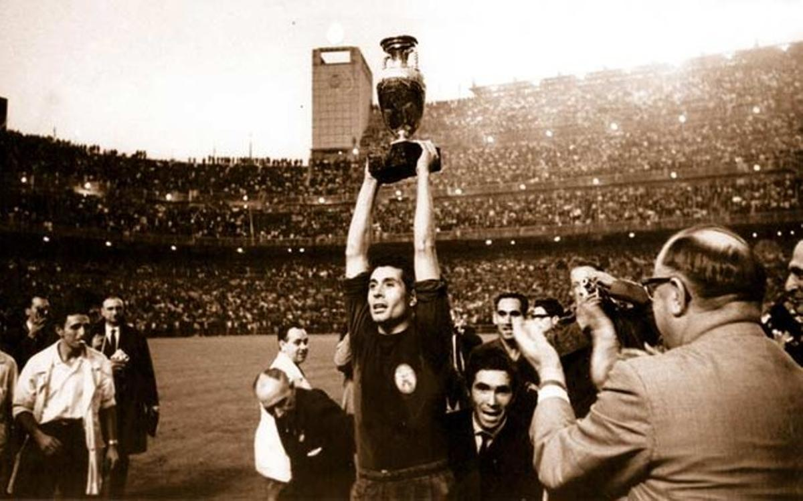

La Eurocopa de 1964
El trofeo obtenido por la selección española de fútbol en la Eurocopa de 1964 no solo supuso el primer gran título internacional del equipo nacional, sino que consolidó el prestigio del fútbol español en el continente, quebrando décadas de decepciones tras el parón de la Guerra Civil y la posguerra.
- Debut en la Fase Final: España abrió el torneo final como anfitriona el 17 de junio de 1964 en Madrid, venciendo 2-1 a Hungría en la prórroga. El mítico Chus Pereda marcó el primer gol de España en la fase final y Amancio sentenció el pase a la final.
- Origen del "Gol de Marcelino": El torneo pasó a la historia por el decisivo gol de cabeza de Marcelino Martínez en el minuto 84, que puso el 2-1 definitivo frente a la URSS. La jugada generó una leyenda televisiva debido a la propaganda de la época (el NO-DO), que manipuló el montaje visual atribuyendo erróneamente la asistencia a Amancio, cuando el pase real fue un centro de Chus Pereda.
- El Torneo y la Victoria: Tras superar las eliminatorias previas ante Rumanía, Irlanda del Norte e Irlanda, España se midió en la gran final del 21 de junio en el Estadio Santiago Bernabéu contra la Unión Soviética, vigente campeona. La cita tuvo una inmensa carga política por el tenso contexto de la dictadura franquista frente al bloque comunista.
- Leyendas en el Equipo: El conjunto dirigido por José Villalonga combinaba veteranía y jóvenes talentos. Destacaban figuras de la talla de Luis Suárez (único Balón de Oro masculino del fútbol español), el guardameta José Ángel Iribar, además de Amancio, Zoco, Pereda, Marcelino y el capitán Fernando Olivella.
- La Identidad: El triunfo de 1964 demostró que España podía competir y ganar a nivel colectivo más allá de las individualidades. Aquella Eurocopa sentó las bases de un equipo solidario, técnico y eficaz que sirvió de único referente de éxito internacional durante 44 años, hasta la llegada de la generación de oro en 2008.
